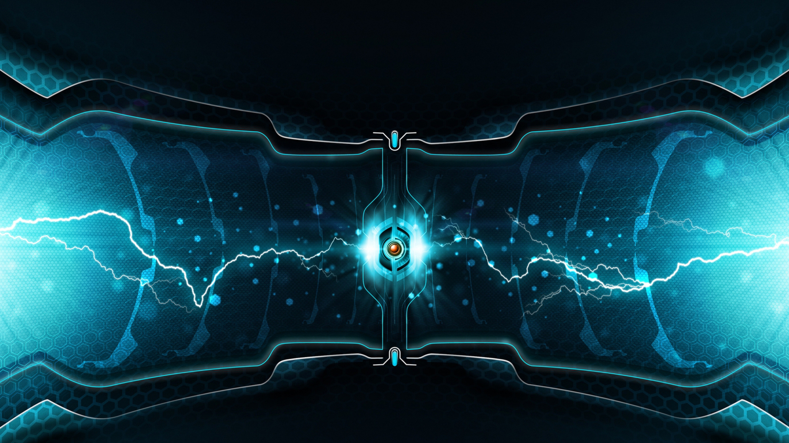

Home
Relaxed
Electronic
Random

♪Welcome to a music site with free non copyrighted music, perfect for gaming and more.
♪To determine what type of music you would like to hear either press realax, pop or random.
comments
Comment
{{ kommentar.skribent }}:
{{ kommentar.text }}